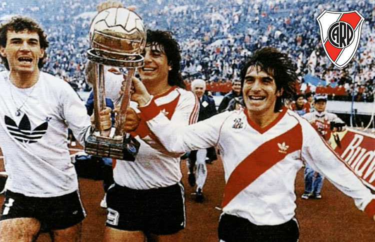

El 14 de diciembre de 1986, River Plate alcanzó la cima del fútbol mundial al coronarse campeón de la Copa Intercontinental ante el Steaua Bucarest de Rumania, en un partido histórico disputado en Tokio, Japón.

River Plate 1 - 0 Steaua Bucarest
(Gol de Antonio Alzamendi a los 28')
El camino a la final
River llegó a esta final tras conquistar su segunda Copa Libertadores en 1986, derrotando en la final a América de Cali de Colombia. El equipo dirigido por Héctor "Bambino" Veira combinaba experiencia y juventud en un fútbol vistoso y efectivo.
La alineación campeona
Nery Pumpido
Nelson Gutiérrez
Oscar Ruggeri
Héctor Enrique
Antonio Alzamendi ⚽
Norberto Alonso (C)
Roque Alfaro
Daniel Passarella
Juan Funes
El gol del triunfo
El uruguayo Antonio Alzamendi escribió su nombre en la historia riverplatense al marcar el gol que le dio a River su primer título mundial. A los 28 minutos del primer tiempo, tras una pared con Funes, Alzamendi definió con un potente remate cruzado que venció al arquero Duckadam.
Héroes del partido
Nery Pumpido: Atajó todo lo que le llegó y mantuvo su arco invicto
Oscar Ruggeri: Muralla defensiva que anuló al ataque rumano
Norberto Alonso: Director técnico en el campo de juego
Héctor Enrique: Dueño del mediocampo
Contexto histórico
Esta victoria tuvo un significado especial:
Primer título intercontinental en la historia de River
Consagración internacional del fútbol argentino
Venganza por la final perdida en 1966 contra el Celtic
Demostración de jerarquía ante el campeón de Europa
Legado
El equipo del 86 se convirtió en:
Uno de los mejores equipos en la historia del club
Referencia para las generaciones siguientes
Símbolo del estilo ofensivo que caracteriza a River
Base de la selección argentina que luego ganaría el Mundial 1986